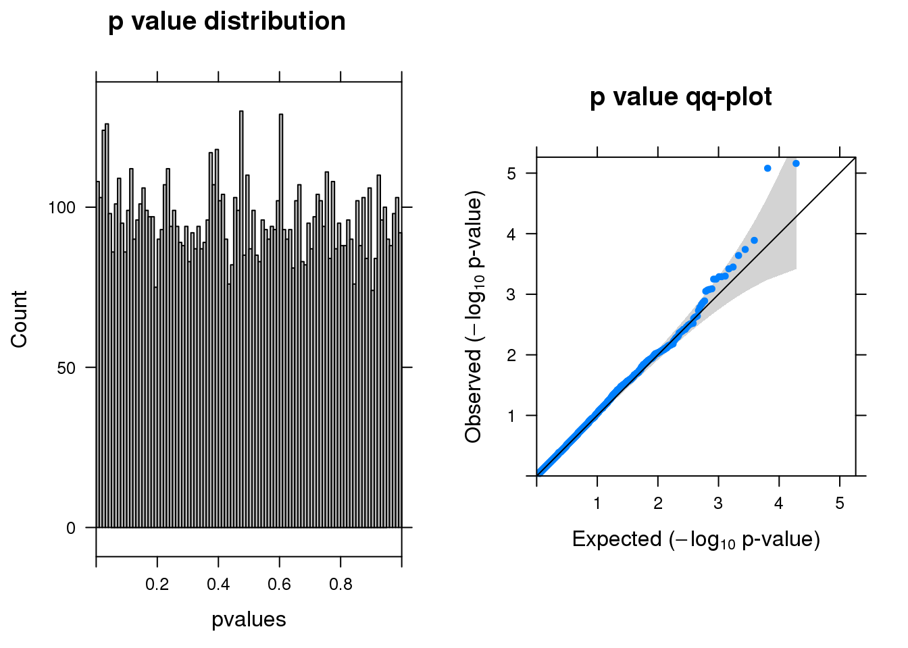

Differential expression analysis–EdgeR log likelihood ratio tests
Siming Zhao
December 2, 2018
Last updated: 2019-02-14
workflowr checks: (Click a bullet for more information)-
✖ R Markdown file: uncommitted changes
The R Markdown file has unstaged changes. To know which version of the R Markdown file created these results, you’ll want to first commit it to the Git repo. If you’re still working on the analysis, you can ignore this warning. When you’re finished, you can runwflow_publishto commit the R Markdown file and build the HTML. -
✔ Environment: empty
Great job! The global environment was empty. Objects defined in the global environment can affect the analysis in your R Markdown file in unknown ways. For reproduciblity it’s best to always run the code in an empty environment.
-
✔ Seed:
set.seed(20181119)The command
set.seed(20181119)was run prior to running the code in the R Markdown file. Setting a seed ensures that any results that rely on randomness, e.g. subsampling or permutations, are reproducible. -
✔ Session information: recorded
Great job! Recording the operating system, R version, and package versions is critical for reproducibility.
-
Great! You are using Git for version control. Tracking code development and connecting the code version to the results is critical for reproducibility. The version displayed above was the version of the Git repository at the time these results were generated.✔ Repository version: fcaa341
Note that you need to be careful to ensure that all relevant files for the analysis have been committed to Git prior to generating the results (you can usewflow_publishorwflow_git_commit). workflowr only checks the R Markdown file, but you know if there are other scripts or data files that it depends on. Below is the status of the Git repository when the results were generated:
Note that any generated files, e.g. HTML, png, CSS, etc., are not included in this status report because it is ok for generated content to have uncommitted changes.Ignored files: Ignored: .Rhistory Ignored: .Rproj.user/ Ignored: analysis/Quality_metrics_cache/ Untracked files: Untracked: analysis/enrichment.Rmd Untracked: analysis/figure/ Untracked: data/SNP_200000.txt Untracked: data/SNP_50000.txt Untracked: data/SNP_500000.txt Untracked: data/edgeR-qlf-10%filter_res.Rd Unstaged changes: Modified: .gitignore Modified: analysis/DEseq2-LRT.Rmd Modified: analysis/EdgeR-LRT.Rmd Modified: analysis/EdgeR-QLF.Rmd Modified: analysis/Quality_metrics.Rmd Modified: analysis/index.Rmd Modified: code/summary_functions.R Modified: cropseq.Rproj Modified: data/DE_input.Rd
Expand here to see past versions:
Load data
source("code/summary_functions.R")
library(dplyr)
library(gtools)
library(data.table)
load("data/DE_input.Rd")
glocus <- "VPS45"
Nperm <- 5
dim(dm)[1]NULLgcount <- dm[1:(dim(dm)[1]-76), colnames(dm1dfagg)[dm1dfagg[glocus,] >0 & nlocus==1]]
# negative control cells defined as neg gRNA targeted cells
ncount <- dm[1:(dim(dm)[1]-76), colnames(dm1dfagg)[dm1dfagg["neg",] >0 & nlocus==1]]
coldata <- data.frame(row.names = c(colnames(gcount),colnames(ncount)),
condition=c(rep('G',dim(gcount)[2]),rep('N',dim(ncount)[2])))
countall <- cbind(gcount,ncount)
totalcount <- apply(countall,1,sum)
cellpercent <- apply(countall,1,function(x) length(x[x>0])/length(x))edgeR log likelihood ratio tests function
library(edgeR)
run_edgeR <- function(y,plotit=T) {
# y is DGElist object
y <- calcNormFactors(y)
group= y$samples[,"group"]
design <- model.matrix(~group)
y <- estimateDisp(y,design)
fitlrt <- glmFit(y,design)
lrt <- glmLRT(fitlrt,coef=2)
out <- topTags(lrt, n=Inf, adjust.method = "BH")
if (plotit==T) {
outsig <- subset(out$table,FDR <0.1)
summ_pvalues(lrt$table$PValue)
print(paste0("There are ",dim(outsig)[1], " genes passed FDR <0.1 cutoff"))
print(knitr::kable(signif(as.matrix(head(out$table[order(out$table$PValue),])),digit=2)))
}
return(out)
}Run edgeR–No filtering
y <- DGEList(counts= countall,group=coldata$condition)
resm <- run_edgeR(y)
Expand here to see past versions of edgeRall-1.png:
| Version | Author | Date |
|---|---|---|
| a78d83a | simingz | 2018-12-17 |
[1] "There are 0 genes passed FDR <0.1 cutoff"
logFC logCPM LR PValue FDR
------- ------ ------- --- -------- -----
A2M -1.50 6.9 20 8.6e-06 0.12
LY6H -2.60 6.6 19 1.2e-05 0.12
LGALS1 -2.20 6.6 19 1.2e-05 0.12
TSPO -1.50 6.4 14 1.5e-04 0.97
SLF2 1.10 6.4 14 1.9e-04 0.97
POMK -0.79 6.3 14 2.2e-04 0.97Permutation
permreslist <- list()
permreslist[[1]] <- data.table(gene=rownames(resm$table), p=resm$table$PValue, fdr=resm$table$FDR, key="gene")
for (n in 2:(Nperm+1)){
y <- DGEList(counts= countall,group=permute(coldata$condition))
res <- run_edgeR(y,plotit = F)
resp <- data.table(gene=rownames(res$table), p=res$table$PValue, fdr=res$table$FDR, key="gene")
colnames(resp) <- c("gene", paste0("perm.p_",n-1), paste0("perm.fdr_",n-1))
permreslist[[n]] <- resp
}
mergedres <- Reduce(merge,permreslist)
knitr::kable(mergedres[fdr <0.1,],digits = 2)gene p fdr perm.p_1 perm.fdr_1 perm.p_2 perm.fdr_2 perm.p_3 perm.fdr_3 perm.p_4 perm.fdr_4 perm.p_5 perm.fdr_5 —– — —- ——— ———– ——— ———– ——— ———– ——— ———– ——— ———–
Run edgeR–at least one cell UMI > 0
y <- DGEList(counts= countall[totalcount>0,],group=coldata$condition)
resm <- run_edgeR(y)
Version
Author
Date
{kind=link}
[1] "There are 3 genes passed FDR <0.1 cutoff"
logFC logCPM LR PValue FDR
------- ------ ------- --- -------- ------
A2M -1.50 6.9 20 8.6e-06 0.063
LY6H -2.60 6.6 19 1.2e-05 0.063
LGALS1 -2.20 6.6 19 1.2e-05 0.063
TSPO -1.50 6.4 14 1.5e-04 0.510
SLF2 1.10 6.4 14 1.9e-04 0.510
POMK -0.79 6.3 14 2.2e-04 0.510Permutation
permreslist <- list()
permreslist[[1]] <- data.table(gene=rownames(resm$table), p=resm$table$PValue, fdr=resm$table$FDR, key="gene")
for (n in 2:(Nperm+1)){
y <- DGEList(counts= countall[totalcount>0,],group=permute(coldata$condition))
res <- run_edgeR(y,plotit = F)
resp <- data.table(gene=rownames(res$table), p=res$table$PValue, fdr=res$table$FDR, key="gene")
colnames(resp) <- c("gene", paste0("perm.p_",n-1), paste0("perm.fdr_",n-1))
permreslist[[n]] <- resp
}
mergedres <- Reduce(merge,permreslist)
knitr::kable(mergedres[fdr <0.1,],digits = 2)| gene | p | fdr | perm.p_1 | perm.fdr_1 | perm.p_2 | perm.fdr_2 | perm.p_3 | perm.fdr_3 | perm.p_4 | perm.fdr_4 | perm.p_5 | perm.fdr_5 |
|---|---|---|---|---|---|---|---|---|---|---|---|---|
| A2M | 0 | 0.06 | 0.44 | 0.86 | 0.52 | 0.91 | 0.64 | 0.95 | 0.63 | 0.95 | 0.06 | 0.74 |
| LGALS1 | 0 | 0.06 | 0.00 | 0.36 | 0.00 | 0.74 | 0.00 | 0.02 | 0.00 | 0.57 | 0.00 | 0.74 |
| LY6H | 0 | 0.06 | 0.00 | 0.16 | 0.00 | 0.06 | 0.00 | 0.00 | 0.00 | 0.57 | 0.00 | 0.10 |
Run edgeR–3% cells with UMI > 0
y <- DGEList(counts= countall[cellpercent > 0.03,],group=coldata$condition)
resm <- run_edgeR(y)
Expand here to see past versions of edgeR0.03-1.png:
| Version | Author | Date |
|---|---|---|
| a78d83a | simingz | 2018-12-17 |
[1] "There are 3 genes passed FDR <0.1 cutoff"
logFC logCPM LR PValue FDR
-------- ------ ------- --- -------- ------
LY6H -2.70 6.6 21 4.1e-06 0.023
LGALS1 -2.30 6.6 21 5.3e-06 0.023
A2M -1.50 6.9 21 5.9e-06 0.023
TSPO -1.50 6.4 15 1.1e-04 0.340
FAM228B -1.00 6.5 14 2.0e-04 0.360
POMK -0.79 6.3 14 2.1e-04 0.360Permutation
permreslist <- list()
permreslist[[1]] <- data.table(gene=rownames(resm$table), p=resm$table$PValue, fdr=resm$table$FDR, key="gene")
for (n in 2:(Nperm+1)){
y <- DGEList(counts= countall[cellpercent > 0.03,],group=permute(coldata$condition))
res <- run_edgeR(y,plotit = F)
resp <- data.table(gene=rownames(res$table), p=res$table$PValue, fdr=res$table$FDR, key="gene")
colnames(resp) <- c("gene", paste0("perm.p_",n-1), paste0("perm.fdr_",n-1))
permreslist[[n]] <- resp
}
mergedres <- Reduce(merge,permreslist)
knitr::kable(mergedres[fdr <0.1,],digits = 2)| gene | p | fdr | perm.p_1 | perm.fdr_1 | perm.p_2 | perm.fdr_2 | perm.p_3 | perm.fdr_3 | perm.p_4 | perm.fdr_4 | perm.p_5 | perm.fdr_5 |
|---|---|---|---|---|---|---|---|---|---|---|---|---|
| A2M | 0 | 0.02 | 0.28 | 0.99 | 0.83 | 0.99 | 0.78 | 1.00 | 0.3 | 0.95 | 0.18 | 0.91 |
| LGALS1 | 0 | 0.02 | 0.00 | 0.01 | 0.00 | 0.38 | 0.00 | 0.11 | 0.0 | 0.03 | 0.00 | 0.01 |
| LY6H | 0 | 0.02 | 0.00 | 0.00 | 0.00 | 0.02 | 0.00 | 0.03 | 0.0 | 0.03 | 0.00 | 0.01 |
Run edgeR–10% cells with UMI > 0
y <- DGEList(counts= countall[cellpercent > 0.1,],group=coldata$condition)
resm <- run_edgeR(y)
Expand here to see past versions of edgeR0.1-1.png:
| Version | Author | Date |
|---|---|---|
| a78d83a | simingz | 2018-12-17 |
[1] "There are 2 genes passed FDR <0.1 cutoff"
logFC logCPM LR PValue FDR
-------- ------ ------- --- -------- -----
A2M -1.50 6.9 20 7.0e-06 0.04
LGALS1 -2.20 6.6 20 8.4e-06 0.04
TSPO -1.50 6.4 15 1.3e-04 0.42
SLF2 1.10 6.5 14 1.8e-04 0.44
FAM228B -0.98 6.5 14 2.3e-04 0.44
ARAF -0.83 6.6 13 3.5e-04 0.45save(resm, file="data/edgeR-lrt-10%filter_res.Rd")Permutation
permreslist <- list()
permreslist[[1]] <- data.table(gene=rownames(resm$table), p=resm$table$PValue, fdr=resm$table$FDR, key="gene")
for (n in 2:(Nperm+1)){
y <- DGEList(counts= countall[cellpercent > 0.1,],group=permute(coldata$condition))
res <- run_edgeR(y,plotit = F)
resp <- data.table(gene=rownames(res$table), p=res$table$PValue, fdr=res$table$FDR, key="gene")
colnames(resp) <- c("gene", paste0("perm.p_",n-1), paste0("perm.fdr_",n-1))
permreslist[[n]] <- resp
}
mergedres <- Reduce(merge,permreslist)
knitr::kable(mergedres[fdr <0.1,],digits = 2)| gene | p | fdr | perm.p_1 | perm.fdr_1 | perm.p_2 | perm.fdr_2 | perm.p_3 | perm.fdr_3 | perm.p_4 | perm.fdr_4 | perm.p_5 | perm.fdr_5 |
|---|---|---|---|---|---|---|---|---|---|---|---|---|
| A2M | 0 | 0.04 | 0.03 | 0.59 | 0.29 | 0.94 | 0.08 | 0.99 | 0.04 | 0.98 | 0.67 | 0.99 |
| LGALS1 | 0 | 0.04 | 0.00 | 0.04 | 0.00 | 0.34 | 0.00 | 0.19 | 0.00 | 0.10 | 0.00 | 0.72 |
Run edgeR–20% cells with UMI > 0
y <- DGEList(counts= countall[cellpercent > 0.2,],group=coldata$condition)
resm <- run_edgeR(y)
Expand here to see past versions of edgeR0.2-1.png:
| Version | Author | Date |
|---|---|---|
| a78d83a | simingz | 2018-12-17 |
[1] "There are 1 genes passed FDR <0.1 cutoff"
logFC logCPM LR PValue FDR
--------- ------ ------- --- -------- ------
A2M -1.50 6.9 19 1.2e-05 0.093
SLF2 1.10 6.5 14 1.7e-04 0.490
FAM228B -0.99 6.5 14 2.2e-04 0.490
ARAF -0.82 6.6 13 3.4e-04 0.490
NINJ1 0.73 6.9 12 4.5e-04 0.490
C17orf80 0.95 6.4 12 4.6e-04 0.490Permutation
permreslist <- list()
permreslist[[1]] <- data.table(gene=rownames(resm$table), p=resm$table$PValue, fdr=resm$table$FDR, key="gene")
for (n in 2:(Nperm+1)){
y <- DGEList(counts= countall[cellpercent > 0.2,],group=permute(coldata$condition))
res <- run_edgeR(y,plotit = F)
resp <- data.table(gene=rownames(res$table), p=res$table$PValue, fdr=res$table$FDR, key="gene")
colnames(resp) <- c("gene", paste0("perm.p_",n-1), paste0("perm.fdr_",n-1))
permreslist[[n]] <- resp
}
mergedres <- Reduce(merge,permreslist)
knitr::kable(mergedres[fdr <0.1,],digits = 2)| gene | p | fdr | perm.p_1 | perm.fdr_1 | perm.p_2 | perm.fdr_2 | perm.p_3 | perm.fdr_3 | perm.p_4 | perm.fdr_4 | perm.p_5 | perm.fdr_5 |
|---|---|---|---|---|---|---|---|---|---|---|---|---|
| A2M | 0 | 0.09 | 0.31 | 0.98 | 0.02 | 0.91 | 0.27 | 0.87 | 0.21 | 0.96 | 0.96 | 1 |
Parameters used
- We used data processed after QC step here.
- targeted locus, choose VPS45.
Session information
sessionInfo()R version 3.5.1 (2018-07-02)
Platform: x86_64-pc-linux-gnu (64-bit)
Running under: Scientific Linux 7.4 (Nitrogen)
Matrix products: default
BLAS/LAPACK: /software/openblas-0.2.19-el7-x86_64/lib/libopenblas_haswellp-r0.2.19.so
locale:
[1] LC_CTYPE=en_US.UTF-8 LC_NUMERIC=C
[3] LC_TIME=en_US.UTF-8 LC_COLLATE=en_US.UTF-8
[5] LC_MONETARY=en_US.UTF-8 LC_MESSAGES=en_US.UTF-8
[7] LC_PAPER=en_US.UTF-8 LC_NAME=C
[9] LC_ADDRESS=C LC_TELEPHONE=C
[11] LC_MEASUREMENT=en_US.UTF-8 LC_IDENTIFICATION=C
attached base packages:
[1] grid stats graphics grDevices utils datasets methods
[8] base
other attached packages:
[1] gridExtra_2.3 edgeR_3.24.3 limma_3.38.2 Matrix_1.2-15
[5] data.table_1.12.0 gtools_3.8.1 dplyr_0.7.8 lattice_0.20-38
loaded via a namespace (and not attached):
[1] Rcpp_1.0.0 highr_0.7 compiler_3.5.1
[4] pillar_1.3.1 git2r_0.23.0 workflowr_1.1.1
[7] bindr_0.1.1 R.methodsS3_1.7.1 R.utils_2.7.0
[10] tools_3.5.1 digest_0.6.18 gtable_0.2.0
[13] evaluate_0.12 tibble_2.0.1 pkgconfig_2.0.2
[16] rlang_0.3.1 yaml_2.2.0 bindrcpp_0.2.2
[19] stringr_1.4.0 knitr_1.20 locfit_1.5-9.1
[22] rprojroot_1.3-2 tidyselect_0.2.5 glue_1.3.0
[25] R6_2.3.0 rmarkdown_1.10 purrr_0.2.5
[28] magrittr_1.5 whisker_0.3-2 backports_1.1.2
[31] htmltools_0.3.6 splines_3.5.1 assertthat_0.2.0
[34] stringi_1.3.1 crayon_1.3.4 R.oo_1.22.0 This reproducible R Markdown analysis was created with workflowr 1.1.1